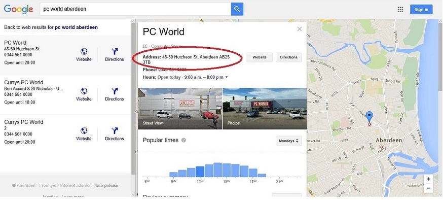

The idea of a semantic network model was born in the early 1960s by cognitive scientist Allan
M. Collins, linguist M. Ross Quillian and psychologist Elizabeth F. Loftus. The
idea was to enable semantic relations between concepts and support of knowledge representation. In terms of computing, the idea of the semantic web is to enable machines to reason with human-readable data available on the web by inserting metadata that represents relations, objects and properties of content data. In the 1990s the following techniques were prevailing: XML (eXtensible Markup Language), MCF (Meta Content Framework), CDF (Channel Definition Format) and sitemaps. MCF was developed between 1995 and 1997 by Ramanathan V. Guha at Apple Computer's Advanced Technology Group. However, Guha left Apple to join Netscape where he began work on the Resource Description Framework (RDF) standard. In the summer of 1997 a meeting was held at MIT by Ramanathan V. Guha, Tim Bray and specialists from other leading companies with the goal to set a standard for all web pages that would enable easier implementation. At that time only about 5,000 websites were indexing their content with metadata which made it difficult for search engines to display relevant results. In 1999 the W3C published a specification of RDF's data model and an XML serialisation as a recommended standard to use. In the early 2000s more and more standards surfaced some of which were: DAML (DARPA Agent Markup Language), OWL (Web Ontology Language), OWL EL, OWL QL, OWL RL. Later, in 2004 work on the SIOC project was initiated by John Breslin and Uldis Bojārs, whose aim was to provide meaningful links between data residing on different online community websites. On June 20th 2005 Microformats was published as an approach using HTML/XHTML tags to specify metadata describing HTML content.
Since the emergence of Web 2.0 the competition between search engine providers became even more apparent. As a consequence, in May 2008 Yahoo! launched SearchMonkey which allowed developers and webmasters to index their web sites in order to show more useful and visually appealing results. That was favourable for both sides as webmasters who indexed their web pages would draw more traffic and Yahoo! would attract more users. SearchMonkey used standard markup and techniques such as Microformats, RDFa and eRDF. Other search engines were not late to follow Yahoo!'s lead in implementing semantic web technologies to provide better services to their users. In 2009 Google launched Google Searchology. In previous years Google focused more on Universal search but with the changes in 2009, the company changed its focus on Personalized search. In December the same year Google released a new feature in their search engine: Google Rich Snippets. The feature allowed extra content to be displayed by the search engine. In order to do that, webmasters had to index their pages using RDFa along with the FOAF and vCard vocabularies.
Google went on and further developed their Rich Snippets. Some of the most widely used data types were People, Events and Recipes. The search engine Yandex was next to follow and released their own implementation of the Rich Snippets concept called Yandex Enhanced Snippets on the 24th of September 2010. Microsoft also had their own implementation called Bing Rich Captions, which was mainly aimed at the improving the Bing shopping experience for the Bing Merchant Center platform. In order to unify different formats in 2011 the initiative for the schema.org vocabulary was launched which was supported by all the listed major search engine providers.
Schema.org is a shared vocabulary available in different encoding formats and serves the purpose to provide markup of web content. This facilitates understanding of the content’s meaning by search engines and other applications in order to provide better user experience. The project is sponsored by Google, Microsoft, Yandex and Yahoo!. The goal of schema.org is to provide webmasters with a structured data markup schema supported by major search engines. The community behind the project involves people from the sponsoring companies along with other active web community members. The so called steering group plays an essential role as it is responsible for making decisions about future developments and changes to the project and all discussions within that group are made available to the public for transparency.
The Schema.org vocabulary consists of a wide number of item types where each one of them is associated with a number of properties available to it. Item types are organised in a hierarchical manner where all item types inherit from the root type - Thing. Item types inherit properties from super types and can inherit properties from more than one parent. For example Item type Code has the following type hierarchy: Thing → CreativeWork → Code. Where it inherits a combined set of attributes from CreativeWork and Thing item types. Multiple inheritance can be illustrated by the following example Thing → Organization → LocalBusiness and Thing → Place → LocalBusiness where LocalBusiness inherits properties from Thing, Organization and Place. Full list containing all item types and illustrating their inheritance hierarchy is also available as part of the schema.org website. In addition, for each item type it is possible to track what properties are inherited from parent item types. Also, some type properties can have expected values, following the previous example a property can have an expected value type of Organization, however, all item types which are directly or indirectly inherent to Organization can be specified as well. In addition, text form value can always be specified even if the expected value for an attribute is supplied. The url item property should be included as part of the markup in cases where a web page consists of a list of items and the list is formed of links to dedicated pages of items. Schema.org markup can also be tested to ensure correct implementation through a range of tools available as web services. Some of the more popular being:
As a general rule all content on a web page can and is beneficial to be marked up. The only exception being is content which is hidden from the user. A study conducted by Searchmetrics which is a leading company in search engine optimisation concluded that web pages which utilise schema.org get better ranking. On average such web pages get 4 positions better ranking than other websites. The study also explains that even though a direct causal relationship cannot be confirmed it is the case that pages which implement content markup are usually supported by more knowledgeable webmasters. Thus the use of the vocabulary can be identified as a correct practice to be followed. In addition, much better visual presentation within search engine result pages often leads to more user satisfaction and thus indirectly influencing page ranking in a positive way.
As explained in the Overview paragraph there is a huge benefit for search engines and applications when structured markup data is used as it enables the rendering of information in a more relevant way. Microdata is a lightweight semantic meta syntax included as part of HTML5. Following is a list of microdata attributes and their use:
Another encoding supported by schema.org is RDFa. The standard is an extension to HTML5 and various XML-based document types and enables encoding of metadata. RDFa includes the following attributes:
The third encoding supported by schema.org is JSON-LD. It is a lightweight linked data format and helps transporting linked data through JSON. Designed around the concept of "context" it instructs applications how to interpret human readable content. In addition, a mapping between JSON and the RDF model can be performed. The "context" keyword links object properties in a JSON document to concepts in an ontology. JSON-LD code can be written in a separate file and referenced in the header tag of the HTML document.
<!DOCTYPE html PUBLIC "-//W3C//DTD XHTML 1.0 Strict//EN"
"http://www.w3.org/TR/xhtml1/DTD/xhtml1-strict.dtd">
<html xmlns="http://www.w3.org/1999/xhtml" lang="en" xml:lang="en">
<head>
<title>Example</title>
</head>
<body>
<div itemscope itemtype="http://schema.org/SportsEvent">
<h1 itemprop = "name">The Great Scottish Run 2015</h1>
<span itemprop = "duration"> Between 01:00h - 04:00h</span>
<span itemprop = "performer" itemscope itemtype="http://schema.org/Person">
<b itemprop="name">John Doe</b></span>
<span itemprop = "startDate"><time datetime="2011-10-04">04/10/2015</time></span>
<span itemprop = "offers" itemscope itemtype = "http://schema.org/Offer">
<span itemprop = "price">35</span>
<span itemprop = "priceCurrency">£</span>
<span itemprop = "url">TBC</span>
</span>
<span itemprop = "location" itemscope itemtype="http://schema.org/Place">
<span itemprop = "name">Glasgow Green Glasgow G1 5DB</span>
<span itemprop = "address">Glasgow Green Glasgow G1 5DB</span>
</span>
</div>
</body>
</html>
<div xmlns="http://www.w3.org/1999/xhtml"
prefix="
schema: http://schema.org/
rdf: http://www.w3.org/1999/02/22-rdf-syntax-ns#
rdfa: http://www.w3.org/ns/rdfa#
rdfs: http://www.w3.org/2000/01/rdf-schema#"
>
<div typeof="schema:SportsEvent">
<div property="schema:name" content="The Great Scottish Run 2015"></div>
<div rel="schema:offers">
<div typeof="rdfs:Resource">
<div property="schema:url" content="TBC"></div>
<div property="schema:price" content="35"></div>
<div property="schema:priceCurrency" content=" £"></div>
</div>
</div>
<div rel="schema:location">
<div typeof="schema:Place">
<div property="schema:address" content="Glasgow Green Glasgow G1 5DB"></div>
<div property="schema:name" content="Glasgow Green Glasgow G1 5DB"></div>
</div>
</div>
<div inlist="" rel="schema:performer" resource="N79ce318f1fd4499d97b8c053c0ce3186"></div>
<div property="schema:startDate" content="04/10/2015"></div>
<div property="schema:duration" content=" Between 01:00h - 04:00h"></div>
</div>
<div typeof="rdfs:Resource" about="http://rdf-translator.appspot.com/">
<div rel="rdfa:usesVocabulary" resource="http://schema.org/"></div>
</div>
</div>
{
"@context": {
"cc": "http://creativecommons.org/ns#",
"ctag": "http://commontag.org/ns#",
"dc": "http://purl.org/dc/elements/1.1/",
"dc1": "http://purl.org/dc/terms/",
"dc11": "http://purl.org/dc/elements/1.1/",
"dcat": "http://www.w3.org/ns/dcat#",
"dcterms": "http://purl.org/dc/terms/",
"foaf": "http://xmlns.com/foaf/0.1/",
"gr": "http://purl.org/goodrelations/v1#",
"grddl": "http://www.w3.org/2003/g/data-view#",
"hcalendar": "http://microformats.org/profile/hcalendar#",
"hcard": "http://microformats.org/profile/hcard#",
"ical": "http://www.w3.org/2002/12/cal/icaltzd#",
"ma": "http://www.w3.org/ns/ma-ont#",
"md": "http://www.w3.org/ns/md#",
"og": "http://ogp.me/ns#",
"org": "http://www.w3.org/ns/org#",
"owl": "http://www.w3.org/2002/07/owl#",
"prov": "http://www.w3.org/ns/prov#",
"qb": "http://purl.org/linked-data/cube#",
"rdf": "http://www.w3.org/1999/02/22-rdf-syntax-ns#",
"rdfa": "http://www.w3.org/ns/rdfa#",
"rdfs": "http://www.w3.org/2000/01/rdf-schema#",
"rev": "http://purl.org/stuff/rev#",
"rif": "http://www.w3.org/2007/rif#",
"rr": "http://www.w3.org/ns/r2rml#",
"schema": "http://schema.org/",
"sd": "http://www.w3.org/ns/sparql-service-description#",
"sioc": "http://rdfs.org/sioc/ns#",
"skos": "http://www.w3.org/2004/02/skos/core#",
"skosxl": "http://www.w3.org/2008/05/skos-xl#",
"v": "http://rdf.data-vocabulary.org/#",
"vcard": "http://www.w3.org/2006/vcard/ns#",
"void": "http://rdfs.org/ns/void#",
"wdr": "http://www.w3.org/2007/05/powder#",
"wdrs": "http://www.w3.org/2007/05/powder-s#",
"wdsr": "http://www.w3.org/2007/05/powder-s#",
"xhv": "http://www.w3.org/1999/xhtml/vocab#",
"xsd": "http://www.w3.org/2001/XMLSchema#"
},
"@graph": [
{
"@id": "_:Nebd6ddf337e14113b3a7ae1bfe98a528",
"schema:price": "35",
"schema:priceCurrency": " £",
"schema:url": "TBC"
},
{
"@id": "_:Ne14d8501971f4c06809b6746dd1298a3",
"@type": "schema:Place",
"schema:address": "Glasgow Green Glasgow G1 5DB",
"schema:name": "Glasgow Green Glasgow G1 5DB"
},
{
"@id": "_:N0d26d7110207456fb2e71fccf4e66665",
"@type": "schema:SportsEvent",
"schema:duration": " Between 01:00h - 04:00h",
"schema:location": {
"@id": "_:Ne14d8501971f4c06809b6746dd1298a3"
},
"schema:name": "The Great Scottish Run 2015",
"schema:offers": {
"@id": "_:Nebd6ddf337e14113b3a7ae1bfe98a528"
},
"schema:performer": {
"@list": [
{
"@id": "_:N442b004172ce4709ae9685d255e080df"
}
]
},
"schema:startDate": "04/10/2015"
},
{
"@id": "",
"rdfa:usesVocabulary": {
"@id": "schema:"
}
},
{
"@id": "_:N442b004172ce4709ae9685d255e080df",
"@type": "schema:Person",
"schema:name": "John Doe"
}
]
}
Even though the idea of providing structure to data on the Internet was initiated in the 1990s a lot of time was required through which different ideas and formats were proposed some of which were further refined and preserved while others got rejected. Through that process only a few websites had actually provided structure to their data. The main drive which changed this started when search engines allowed for better rendering of search results for webmasters. This increased the use of structure data, however the wide variety of vocabularies and formats used across different search engines imposed a problem for web developers and still prevented wide adoption. This is the problem which Schema.org was designed to solve, namely to provide a standardised vocabulary which could be used across all major search engines. In addition, schema.org aims to provide a vocabulary which is simplified and does not require webmasters to have wide knowledge of Knowledge Representation and other related techniques and concepts. The community behind Schema.org decided that it is better to use an incremental approach and release a basic version of the vocabulary and let it evolve as per the requirements of the webmasters. A confirmation of this is the fact that since the initial release the vocabulary has grown by around 600 classes and 800 properties. In conclusion, it can be said that schema.org has provided webmasters with means for structuring and displaying data in much more visually pleasing way while keeping the additional effort required to a minimum.
Nowadays, most people use the Internet as a primary source of information. Moreover, there is a trend that websites maintained by a community (weblogs, wikis, forums, etc.) are gaining more and more popularity in comparison with traditional news websites. Many users visit such community supported websites on a daily basis in search for articles in a specific topic or just to get informed with current news. However, due to the heterogeneous nature of the data from such sources, finding, interlinking and querying data within and between social communities is a difficult task. In addition, the information on such sites is being kept from sharing and generally lacks machine-readable metadata. A user may find a piece of information on an online community website, without realising that this information is incomplete and that there are a lot more related pieces residing on other similar sites. Overall, most of the Web 2.0 services share this common problem of isolating their data known as data portability. It obscures the extraction of data and its reuse by users and software agents (The SIOC Project).
The Semantically-Interlinked Online Communities, or SIOC is a semantic web technology that relies on the RDF (Resource Description Framework) standard, developed by W3C (World Wide Web Consortium). It is based on the use of SIOC ontology, which is an open-standard machine readable format used to describe information contained in online community sites in a simple and extensible way. The work on this semantic web technology project was started in 2004 by John Breslin and Uldis Bojārs at Digital Enterprise Research Institute (DERI), National University of Ireland (NUI) Galway. As of 2007, SIOC is a W3C Member Submission. The Semantic Web provides standards and models to build a Web of Data in order to solve the problem of data decentralisation. This leads to the Social Semantic Information Spaces, where information from different social networks, blogs, wikis, etc. is being created and maintained through social interaction but is also kept in a machine readable format. SIOC aims to provide the building blocks for this integration. It attempts to solve the above problem by providing a comprehensive data model to represent social activity in online communities. To achieve this it relies on the SIOC Ontology and a set of applications involved in the production, collection and consumption of SIOC data. These two concepts form the SIOC eco-system.
An eco-system has been created by various SIOC-enabled services. It takes part in the different stages of the SIOC information life cycle. As it is wrapped around an ontology, the eco-system bypasses the problem of chicken and egg. In short the problem relates that data source providers do not provide metadata through ontologies unless clear benefit from it is apparent. Without metadata, no semantic functionality can be achieved. In contrast SIOC provides the means to present data in a rich, interconnected fashion. This has the potential to scale well with various browsers and applications that can take advantage of this information. An opportunity which leads to the so called “SIOC food chain” consisting of tools that generate SIOC data and tools that browse and reuse this data. Producers of SIOC data include exporters, queryable APIs, applications that can natively store semantic data and schema mapping tools that generate SIOC data. The data from these tools can be either collected in an intermediate step or consumed by another application. Collectors include Semantic Web spiders or crawlers designed to gather SIOC data from different sources and store it in a single place. Consumers include generic browsers for RDF data or custom extensions for browsers designed to display SIOC data.
To promote the use of SIOC some initial so called “seed” applications covering key areas of the ecosystem have been developed. Some of these include the WordPress SIOC export plugin, the Semantic Radar extension for Firefox and various other applications for exploring SIOC data.
The idea behind data portability is that we as users want our data (e.g., pictures, blog posts, videos, pfs, etc.) to be shared across all our trusted platforms and services. This concept is very important as without it we can have multiple identities on separate social networks with different sets of friends. In contrast data portability would allow us to import one of our existing profiles and have a single global identity which would be shared across all services that we use. One way to achieve this would be to employ semantic formats to describe information (e.g., people, content objects and the connection between them) in this way social websites can collaborate with one another following common semantics. Some of the semantic technologies that are currently being used include FOAF, XFN / hCard, SIOC, etc. In addition, object-centred social networks can act as excellent data silos for semantic applications.
This concept deals with the idea of providing a semantic representation for the decentralised content which can be associated with a user across the Social Web. Centralisation of content can be achieved through a combination of SIOC and FOAF in order to describe user related objects. Specifically, SIOC can be utilised to provide links between content items and a FOAF profile can unify information about the user's contacts. This then would result in an overall picture of the artefacts created through the activities carried out by the user. It may not always be the case that a user would like all the information centred but would be more interested in transferring information across different social communities. Again, this can be achieved through a description of the content from the initial community site which will then be migrated to the new one (Interlinked online communities Paper ref Goes here).
Structured blogging is an attempt to add more information to blog posts so they can be reused by other applications. It aims to create Microformat data from different blogging platforms. Hence structured data about objects is becoming a part of blog posts. An advantage of this Microformat data and structured blogging is it can be used as a starting point for getting into web semantics for non-technical people: they simply decide on the type of post they want to create and the semantic data is created in the background. If structured blogging is about the blog post as a whole, semantic blogging is about the blog post’s content information. It is similar to structured blogging, but uses RDF as a data model and hence is much more flexible.
Microformats utilises some properties of HTML tags to embed semantics into tags to enable machines to understand content data specified. They encourage the re-use of property names. However, it needs to be carefully done as there are some scoping and namespacing issues (Accepted limitations of microformats):
<ul> <li>48-50 Hutcheon St</li> <li>Aberdeen</li> <li>AB25 3TB</li> </ul>
<ul class="adr"> <li class="street-address">48-50 Hutcheon St</li> <li class="locality">Aberdeen</li> <li class="postal-code">AB25 3TB</li> </ul>
After markup the search engines can provide the following visual representation of information:
The SIOC ontology uses terms to describe content in web pages. They can be grouped in two categories – classes (concepts) and properties (attributes).
sioc:Community – a high-level representation of the community concept. It describes a set of objects (sites, people, etc.) linked together by a common interest or topic. The Community class can be related to many sites, while a single site belongs to a particular Community.
sioc:Container – this class groups together instances of Items. An Item is related to a Container via the
sioc:has_container property, whilst Container groups many Items with sioc:container_of. A Container is a super class of Forum (one of the core classes in the SIOC ontology).
sioc:Forum – a discussion area or channel hosted by a Site, where users create Posts. A Forum is organised around a certain topic and may have a set of UserAccounts subscribed to it. One of these UserAccounts is the moderator of the Forum, who is responsible for managing its content and has the power to veto or edit a Post. One Forum can be related to another via sioc:has_parent relationship, in that way a hierarchy structure is created.
sioc:Item – a part of Container and a super class of Post.
sioc:Post – the building block of the Forum class. It is a message created by UserAccount and posted to a specific Forum. One Post can be related to another via sioc:has_reply to create a Thread of messages, where UserAccounts discuss a topic.
sioc:Role – describes the function of a UserAccount and its privileges. A Role can be a Forum moderator or a Site
administrator.
sioc:Site – subclass of Space, that hosts a set of Forums used for discussions by an online community.
sioc:Space – represents a location where data resides. A Container is linked to Space with sioc:has_space relationship.
sioc:Thread – defines a conversation within a Forum, which has a collection of Posts created by UserAccounts. Usually Posts are ordered chronologically from oldest to latest and a single UserAccount can post multiple messages within a Thread.
sioc:UserAccount – describes a membership of a user to an online community. Each user via its UserAccount is able to create or edit Posts in a Thread. All UserAccounts can subscribe to a Forum, whereas Roles like moderator or administrator have higher privileges. Moderators are responsible for editing and contributing to content in Forums, while administrators can promote UserAccounts to moderators and manage topics included in the online community. UserAccounts can be grouped in UserGroups with different levels of access and rights.
A UserAccount belongs to a single foaf:Person type, whilst one foaf:Person can have many UserAccounts. UserAccount is used to represent the attributes of an account in an online community and foaf:Person adds additional information about the individual itself.
sioc:Usergroup – a collection of UserAccounts, which can based on either interest in a certain topic (Thread) or the Role members of the group have (e.g. moderator, administrator).
The main properties used to describe relationships between classes are listed below. They help to extract the meaning from community sites.
sioc:has_container – links an instance of Item to the Container it belongs.
sioc:has_creator – refers to the UserAccount that created an Item. This property enables to follow the link from an Item to its author, thus other resources created by the same UserAccount can be located/identified.
sioc:has_function – represents the Role an UserAccount has. A UserAccount can have different rights/permissions/privileges in different Forums.
sioc:has_host – links a Forum to the Site it resides in.
sioc:has_member – describes the relationship between a Usergroup and an instance of its members.
sioc:has_parent – a Container/Forum can have a parent Container/Forum.
sioc:has_reply – an Item/Post can be created as a reply to another Item/Post. Thus, a tree-like structure is formed to present a series of Items/Posts under the same topic.
sioc:has_scope – points to the Forum that a Role has privileges on.
sioc:has_space – describes the Space where data resides in.
sioc:topic – this property can be applied to the most of the classes building the SIOC ontology. Its metadata is used to match documents and people to each other.
It may not be possible a UserAccount to assign a topic to an Item when it is created, however a Container will usually have one selected that will also apply to all associated Items it has. Moreover, when a UserAccount or Usergroup are generated they can pick topics of interest to be included in their profiles. This way, Forums that match these topics of interest can be suggested to the UserAccount or UserGroup.
<sioc:Post rdf:about="http://johnbreslin.com/blog/2006/09/07/creating-connections-between-discussion-clouds-with-sioc/"> <dcterms:title>Creating connections between discussion clouds with SIOC</dcterms:title> <dcterms:created>2006-09-07T09:33:30Z</dcterms:created> <sioc:has_container rdf:resource="http://johnbreslin.com/blog/index.php?sioc_type=site#weblog"/> <sioc:has_creator> <sioc:UserAccount rdf:about="http://johnbreslin.com/blog/author/cloud/" rdfs:label="Cloud"> <rdfs:seeAlso rdf:resource="http://johnbreslin.com/blog/index.php?sioc_type=user&sioc_id=1"/> </sioc:UserAccount> </sioc:has_creator> <sioc:content>SIOC provides a unified vocabulary for content and interaction description: a semantic layer that can co-exist with existing discussion platforms.</sioc:content> <sioc:topic rdfs:label="Semantic Web" rdf:resource="http://johnbreslin.com/blog/category/semantic-web/"/> <sioc:topic rdfs:label="Blogs" rdf:resource="http://johnbreslin.com/blog/category/blogs/"/> <sioc:has_reply> <sioc:Post rdf:about="http://johnbreslin.com/blog/2006/09/07/creating-connections-between-discussion-clouds-with-sioc/#comment-123928"> <rdfs:seeAlso rdf:resource="http://johnbreslin.com/blog/index.php?sioc_type=comment&sioc_id=123928"/> </sioc:Post> </sioc:has_reply> </sioc:Post>
The above example has been taken from the SIOC specification. It shows a post (sioc:Post) object with the following properties:
dcterms:title - "Creating connections between discussion clouds with SIOC"dcterms:created with a date formatted with compliance to ISO-8601 - 2006-09-07T09:33:30Zsioc:has_container with an object - "http://johnbreslin.com/blog/index.php?sioc_type=site#weblog" which indicates a sioc:Forum object that this post is part ofsioc:has_creator with a user account sioc:UserAccount object with name "Cloud" and identified as "http://johnbreslin.com/blog/author/cloud/". It also has a rdfs:seeAlso property providing more SIOC information about the objectsioc:content of the post holding the textual representation of the information written in the postsioc:topic - "Semantic Web" and "Blogs" identified by "http://johnbreslin.com/blog/category/semantic-web/" and "http://johnbreslin.com/blog/category/blogs/" respectivelysioc:has_reply pointing to a reply identified as "http://johnbreslin.com/blog/2006/09/07/creating-connections-between-discussion-clouds-with-sioc/#comment-123928" which also has a rdfs:seeAlso property linking to more SIOC data about the replyOverall in 2013 an average of 15% (5 000 000) web pages did implement semantic content markup, as of this year the number has risen to 10 000 000. The positive trend can be attributed to task specific and easy to implement vocabularies like SIOC and schema.org which were examined in the report. As explained earlier the ability to achieve better search engine result page rankings or to get all person related content from a social community can be highly valuable nowadays. In addition, a combined effort including SIOC can result in a complete amalgamation of social content for a person across different community platforms, which can later be trended and analysed. In terms of the schema.org vocabulary the fact that it is a combined project between competing search engine service providers aiming to supply developers with an easy to implement product goes to show that the identified trend in the beginning of the paragraph is likely to be continued in upcoming years. In conclusion, wider adoption of semantic content through different vocabularies and techniques results in more Web 3.0 functionalities being made available to both webmasters and users.